1088D24 RIGID PIPE FOR COOLANT INLET TO WATER PUMP - R + R
- Path
- Procedures > 10 ENGINE UNIT > 1088 ENGINE COOLING > 1088D COOLANT HOSES AND SLEEVES > 1088D24 RIGID PIPE FOR COOLANT INLET TO WATER PUMP - R + R
- Kind
- repair procedure (removal / refitting; the operation number is the code)
- Applies to
- all engines; all production periods
- Interactive page
- https://sloeber94.github.io/elrnDB-aGt/en/#/125001186
Applies to: engines: 2.0 JTS; all production periods
 Removing
Removing
 Refitting
RefittingPosition the vehicle on the ramp
Proceed with removal
Op. 1016A40 IGNITION COIL COVER ON CYLINDER HEAD- R+R
Proceed with removal
Proceed with removal
Op. 1048A59 PIPE from flow meter to throttle casing hose - R.R.
Drain the air conditioner coolant circuit
.
Proceed with removal
Proceed with removal
Op. 0010T84 COOLANT FOR AIR CONDITIONING SYSTEM DEHYDRATE AND RECHARGE
Proceed with removal
Proceed with removal
Op. 4450B04 RIGHT FRONT WHEEL R R
1. Disconnect the lower coolant outlet hose from the radiator and drain the engine coolant.
Op. 7055B54 UNDER-ENGINE GUARD - R R
Op. 5040A20 AIR CONDITIONER COMPRESSOR - R+R - INCLUDES FLUID LEVEL CHECK AND TOP UP IF NECESSARY
Op. 5040A26 COMPRESSOR MOUNT - R R
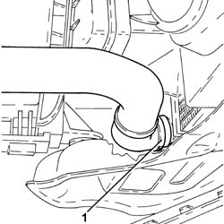
Applies to: engines: 2.0 JTS; all production periods
Proceed with removal
Op. 1076A48 CATALYTIC CONVERTER HEAT SHIELD - R R
1. Loosen band and disconnect the upper coolant inlet hose to the radiator, thermostat side.
2. Loosen the band and disconnect the coolant outlet pipe from the climate control heater, water pump rigid inlet pipe side.
3. Loosen the band securing the coolant outlet pipe from the engine oil heat exchanger on the water pump rigid inlet pipe side.
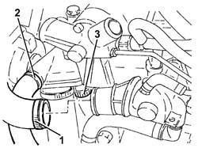
Applies to: engines: 2.0 JTS; all production periods
1. Loosen the band and disconnect the engine coolant supplyj sleeve, water pump rigid inlet pipe side.
2. Undo the bolt securing the guide tube for the engine oil dipstick to the water pump rigid fluid inlet pipe.
3. Undo the bolts (3a) and remove the water pump rigid inlet pipe (3b) complete with lower coolant outlet pipe from the radiator after disconnecting the coolant outlet pipe from the engine oil heat exchanger from the radiator.
Remove the O-ring.
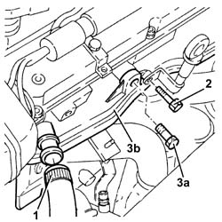
Applies to: engines: 2.0 JTS; all production periods
Refitting
RemovingRefit the water pump rigid inlet pipe, complete with lower coolant outlet sleeve from the radiator and O-ring and secure it using the bolts.
Tighten the bolt securing the engine oil dipstick guide tube to the water pump fluid rigid fluid intake pipe.
Connect the engine coolant supply sleeve, water pump rigid inlet pipe side, to the water pump and tighten the band.
Connect the coolant outlet pipe from the engine oil heat exchanger to the water pump rigid inlet pipe and tighten the band.
Connect the coolant return hose from the climate control heater on the side of the rigid inlet pipe to the water pump and tighten the pump.
Connect the upper coolant inlet hose to the radiator, thermostat side, and tighten the band.
Proceed with refitting
Op. 1076A48 CATALYTIC CONVERTER HEAT SHIELD - R R.
Connect the rapid attachment for the bottom coolant outlet hose from the radiator.
Proceed with refitting
Op. 5040A26 COMPRESSOR MOUNT - R R.
Proceed with refitting
Op. 5040A20 AIR CONDITIONER COMPRESSOR - R+R - INCLUDES FLUID LEVEL CHECK AND TOP UP IF NECESSARY.
Proceed with refitting
Op. 7055B54 UNDER-ENGINE GUARD - R R.
Proceed with refitting
Op. 4450B04 RIGHT FRONT WHEEL R R.
Proceed with refitting
Proceed with refitting
Op. 1048A59 PIPE from flow meter to throttle casing hose - R.R..
Refill the engine cooling system with coolant
Op. 0010T20 COOLANT CHECK DENSITY AND TOP UP IF NECESSARY.
Fill the air conditioner coolant circuit
Op. 0010T84 COOLANT FOR AIR CONDITIONING SYSTEM DEHYDRATE AND RECHARGE.
Proceed with refitting
Op. 1016A40 IGNITION COIL COVER ON CYLINDER HEAD- R+R.
Remove the car from the ramps.
Applies to: engines: 3.2 V6; all production periods
Removing
RefittingPosition the vehicle on the ramp
Proceed with removal
Op. 4450B02 LEFT FRONT WHEEL R R
Proceed with removal
Proceed with removal
Op. 7055B65 ENGINGE BAY DUSTGUARD PROTECTION IN LEFT FRONT WHEEL ARCH R R
1. Press the two rapid attachment clips, by hand, and disconnect the lower coolant outlet hose from the radiator, radiator side.
Op. 7055B54 UNDER-ENGINE GUARD - R R
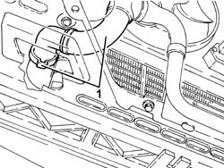
Applies to: engines: 3.2 V6; all production periods
1. Undo the nuts fixing the exhaust pipes between the catalytic converters and preconverters, preconverter side.
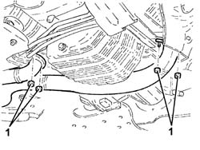
Applies to: engines: 3.2 V6; all production periods
Proceed with removal
Proceed with removal
1. Open the electrical connections box cover.
Op. 5530B52 BATTERY DRIP TRAY/SUPPORT - R.R.
2. Disconnect the electrical connection for the upper right Lambda sensor.
3. Disconnect the electrical connection for the rpm sensor.
4. Disconnect the electrical connection for the cam angle sensor.
Name | Connector | |
|---|---|---|
2 | Lambda sensor on pre-catalyzer -2 | See K16 LAMBDA SENSOR ON PRE-CATALYZER -2 ( CONNECTORS ) |
5. Disconnect the electrical connection for the knock sensor flywheel side.
Name | Connector | |
|---|---|---|
3 | Rpm sensor | See K46 RPM SENSOR ( CONNECTORS ) |
6. Undo the nut (6a) and disconnect the earth lead (6b) from the left tappet cover.
Name | Connector | |
|---|---|---|
4 | Timing sensor. | See K47 TIMING SENSOR. ( CONNECTORS ) |
7. Disconnect the electrical connection from the engine coolant temperature sensor.
Name | Connector | |
|---|---|---|
5 | Detonation sensor 1 | See K50 DETONATION SENSOR 1 ( CONNECTORS ) |
Name | Connector | |
|---|---|---|
6b | Earth on engine | See C40 ENGINE EARTH |
Name | Connector | |
|---|---|---|
7 | Engine temperature sender unit | See K36 ENGINE TEMPERATURE SENDER UNIT ( CONNECTORS ) |
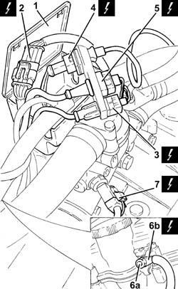
Applies to: engines: 3.2 V6; all production periods
1. Loosen the band and disconnect the coolant supply pipe from the climate control heater, thermostat side.
2. Undo the bolts (2a) and move the thermostat (2b) to the side complete with electrical connections box (2c).
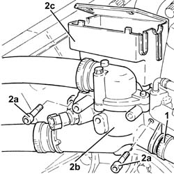
Applies to: engines: 3.2 V6; all production periods
1. Remove the circlip (1a) and remove the clutch operating cylinder (1b) from its housing, then place it at the side without disconnecting the pipe.
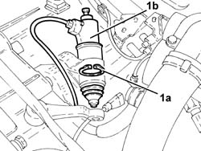
Applies to: engines: 3.2 V6; all production periods
1. Undo the bolts (1a) and remove the clutch operating cylinder support (1b).
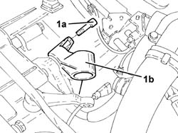
Applies to: engines: 3.2 V6; all production periods
Proceed with removal
Op. 1008C10 POWER UNIT UPPER REACTION LINK R R
1. Undo the bolts (1a) and disconnect the left driveshaft (1b) from the differential inner shaft.
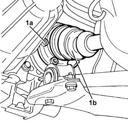
Applies to: engines: 3.2 V6; all production periods
1. Position a hydraulic jack under the differential.
2. Undo the bolts securing the gearbox side flexible block to the body.
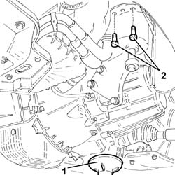
Applies to: engines: 3.2 V6; all production periods
1. Lower the power unit, as necessary, using the hydraulic jack and remove the water pump rigid inlet pipe working via the wheelarch.
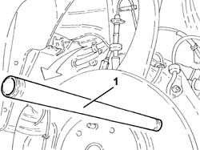
Applies to: engines: 3.2 V6; all production periods
Refitting
RemovingPlace the water pump rigid inlet pipe back in its housing working via the wheel arch.
Place the power unit back in its housing using the hydraulic jack.
1. Tighten the bolts fixing the power unit gearbox side support flexible mounting to the bodyshell to the recommended torque.
 | Fastening | Component | Ø | Value (daNm) |
|---|---|---|---|---|
1 | Bolt | GEARBOX SIDE RUBBER MOUNT | M8 | (Bodyshell side) 3.2 ÷ 3.9 |
2. Remove the hydraulic jack from under the differential.
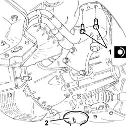
Applies to: engines: 3.2 V6; all production periods
1. Connect the left driveshaft (1a) to the differential inner shaft and fix it tightening the bolts (1b) to the recommended torque.
| Fastening | Component | Ø | Value (daNm) |
|---|---|---|---|---|
1b | - | - | - | - |
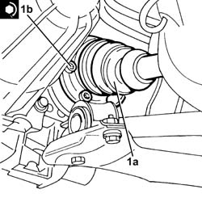
Applies to: engines: 3.2 V6; all production periods
Proceed with refitting
Op. 1008C10 POWER UNIT UPPER REACTION LINK R R.
Place the clutch operating cylinder mounting back in its housing and secure it using the bolts.
Place the clutch operating cylinder back in its housing and secure it using the circlip.
1. Place the thermostat (1a) back in its housing complete with electrical connections box (1b) and secure it tightening the bolts (1c) to the recommended torque.
| Fastening | Component | Ø | Value (daNm) |
|---|---|---|---|---|
1c | Bolt | THERMOSTAT | M6 | (Cylinder head side) 0.8 ÷ 1.0 |
2. Connect the engine coolant return pipe from the climate control system heater, thermostat side, and tighten the band.
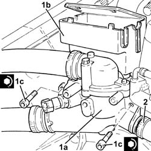
Applies to: engines: 3.2 V6; all production periods
Connect the electrical connection to the engine coolant temperature sensor.
Connect the earth lead to the left tappet cover and secure it using the nut.
Connect the electrical connection for the knock sensor flywheel side.
Connect the electrical connection for the cam angle sensor.
Connect the electrical connection for the rpm sensor.
Connect the electrical connection for the right upper Lambda sensor.
Close the electrical connections box cover.
Proceed with refitting
Op. 5530B52 BATTERY DRIP TRAY/SUPPORT - R.R..
Proceed with refitting
1. Tighten the nuts fixing the exhaust pipes between the catalytic preconverters and catalytic converters, preconverter side, to the recommended torque.
| Fastening | Component | Ø | Value (daNm) |
|---|---|---|---|---|
1 | Nut | LEFT PRECONVERTER.CONVERTER PIPE/ | M8 | (Catalyitic preconverter side) 2.3 ÷ 2.8 |
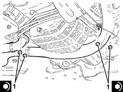
Applies to: engines: 3.2 V6; all production periods
Connect the rapid attachment for the lower coolant outlet hose from the radiator, radiator side.
Proceed with refitting
Op. 7055B65 ENGINGE BAY DUSTGUARD PROTECTION IN LEFT FRONT WHEEL ARCH R R.
Proceed with refitting
Op. 4450B02 LEFT FRONT WHEEL R R.
Refill the engine cooling system with coolant
Op. 0010T20 COOLANT CHECK DENSITY AND TOP UP IF NECESSARY.
Proceed with refitting
Op. 7055B54 UNDER-ENGINE GUARD - R R.
Remove the car from the ramps.
Applies to: engines: 1.9 JTD 16V; all production periods
Removing
RefittingPosition the vehicle on the ramp
Proceed with removal
- 1016A10 sound-proofing cover - r + r
Proceed with removal
1. Loosen the band and disconnect the lower radiator coolant outlet hose from the radiator, water pump rigid inlet pipe end.
Op. 7055B54 UNDER-ENGINE GUARD - R R
2. Loosen the band and disconnect the system supply pipe from the water pump rigid inlet pipe.
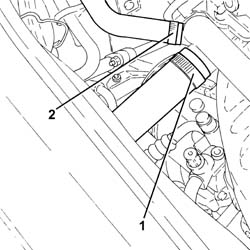
Applies to: engines: 1.9 JTD 16V; all production periods
1. Loosen the band and disconnect the coolant outlet pipe from the water/exhaust gas heat exchanger for the E.G.R. system, water pump rigid coolant inlet pipe side.
2. Loosen the band and disconnect the coolant outlet pipe from the climate control heater, water pump rigid inlet pipe side.
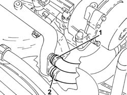
Applies to: engines: 1.9 JTD 16V; all production periods
1. Undo the bolts (1a) and remove the water pump rigid inlet pipe (1b).
2. Remove the gasket.
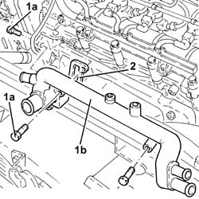
Applies to: engines: 1.9 JTD 16V; all production periods
Refitting
RemovingPlace the water pump rigid inlet pipe, complete with gasket, back in its housing and secure it with the bolts.
Connect the coolant return hose from the climate control heater on the side of the rigid inlet pipe to the water pump and do up the band.
Connect the coolant outlet pipe from the E.G.R. system water/exhaust gas heat exchanger to the water pump rigid inlet pipe and tighten the band.
Connect the system supply pipe to the water pump rigid inlet pipe and tighten the band.
Connect the lower radiator coolant outlet hose to the water pump rigid inlet pipe and tighten the band.
Proceed with refitting
Op. 7055B54 UNDER-ENGINE GUARD - R R.
Refill the engine cooling system with coolant
Op. 0010T20 COOLANT CHECK DENSITY AND TOP UP IF NECESSARY.
Proceed with refitting
- 1016A10 sound-proofing cover - r + r
.
Remove the car from the ramps.
Applies to: engines: 1.8 T.SPARK; all production periods
Removing
RefittingPosition the vehicle on the ramp.
Ensure that the ignition key is in the OFF postition, then disconnect the battery negative terminal.
Name | Connector | |
|---|---|---|
- | Battery | See A1B BATTERY ( CONNECTORS ) |
Proceed with the removal
Op. 1072C44 EXHAUST MANIFOLD HEAT SHIELD ON BULKHEAD - R+R.
Proceed with the removal
Op. 1080B40 CATALYTIC PRE-CONVERTER - R R.
Proceed with the removal
Op. 1072C12 EXHAUST MANIFOLD - R R.
1. Release and remove the engine oil dipstick.
2. Undo the nut (2a) and remove the engine oil dipstick pipe (2b).

Applies to: engines: 1.8 T.SPARK; all production periods
1. Undo the bolt (1a) and the nut (1b) and remove the water pump rigid inlet pipe mounting bracket (1c).
2. Remove the exhaust manifold gasket.

Applies to: engines: 1.8 T.SPARK; all production periods
1. Disconnect the lower radiator coolant outlet hose from the water pump rigid inlet pipe.
2. Undo the bolt fixing the rigid supply pipe to the engine oil heat exchanger.
3. Disconnect the return pipe from the engine oil heat exchanger to the water pump rigid inlet pipe, heat exchanger side.

Applies to: engines: 1.8 T.SPARK; all production periods
1. Disconnect the coolant return pipe from the climate control heater, water pump rigid inlet pipe side.
2. Undo the bolt fixing the rigid supply pipe to the engine oil heat exchanger.

Applies to: engines: 1.8 T.SPARK; all production periods
1. Disconnect the engine coolant system supply pipe from the water pump rigid inlet pipe.
2. Undo the bolts (2a) and remove the water pump rigid inlet pipe (2b).
Remove the gasket.

Applies to: engines: 1.8 T.SPARK; all production periods
Refitting
RemovingPlace the water pump rigid inlet pipe, complete with gasket, back in its housing and secure it tightening the bolts to the recommended torque.
Fastening | Component | Ø | Value (daNm) | |
|---|---|---|---|---|
- | Bolt | COOLANT PUMP RIGID INLET PIPE | M6 | (Cylinder head side) 0.8 ÷ 1.0 |
Connect the engine cooling system supply pipe to the water pump rigid outlet pipe.
Tighten the bolt fixing the rigid supply pipe to the engine oil heat exchanger.
Connect the coolant return hose from the climate control heater on the side of the rigid inlet pipe to the water pump.
Connect the return pipe from the engine oil heat exchanger to the wter pump rigid inlet pipe, heat exchanger side.
Tighten the bolt fixing the rigid supply pipe to the engine oil heat exchanger.
Connect the lower radiator coolant outlet hose to the water pump rigid inlet pipe.
Place a new exhaust manifold gasket in the housing.
Place the bracket fastening the water pump rigid coolant inlet pipe back in its housing and fasten it using the nut and the bolt.
Place the complete engine oil dipstick tube back in its housing and fix it using the bolt.
Place the engine oil dipstick back in its seating.
Proceed with the refitting
Op. 1072C12 EXHAUST MANIFOLD - R R.
Proceed with the refitting
Op. 1080B40 CATALYTIC PRE-CONVERTER - R R.
Proceed with the refitting
Op. 1072C44 EXHAUST MANIFOLD HEAT SHIELD ON BULKHEAD - R+R.
Connect the battery terminal (-).
Refill the engine cooling system with coolant
Op. 0010T20 COOLANT CHECK DENSITY AND TOP UP IF NECESSARY
.
Remove the car from the ramp.
Topics linked from this page (17)
- 0010T20 COOLANT CHECK DENSITY AND TOP UP IF NECESSARY
- 0010T84 COOLANT FOR AIR CONDITIONING SYSTEM DEHYDRATE AND RECHARGE
- 1008C10 POWER UNIT UPPER REACTION LINK R R
- 1016A40 IGNITION COIL COVER ON CYLINDER HEAD- R+R
- 1048A59 PIPE from flow meter to throttle casing hose - R.R.
- 1072C12 EXHAUST MANIFOLD - R R
- 1072C44 EXHAUST MANIFOLD HEAT SHIELD ON BULKHEAD - R+R
- 1076A48 CATALYTIC CONVERTER HEAT SHIELD - R R
- 1080B40 CATALYTIC PRE-CONVERTER - R R
- 4450B02 LEFT FRONT WHEEL R R
- 4450B04 RIGHT FRONT WHEEL R R
- 5040A20 AIR CONDITIONER COMPRESSOR - R+R - INCLUDES FLUID LEVEL CHECK AND TOP UP IF NECESSARY
- 5040A26 COMPRESSOR MOUNT - R R
- 5530B10 BATTERY - R+R
- 5530B52 BATTERY DRIP TRAY/SUPPORT - R.R.
- 7055B54 UNDER-ENGINE GUARD - R R
- 7055B65 ENGINGE BAY DUSTGUARD PROTECTION IN LEFT FRONT WHEEL ARCH R R
Topics that link to this page (13)
- 1020D26 FLYWHEEL SIDE OIL SEAL COVER - R+R
- 1024B10 ENGINE FLYWHEEL - R + R FOR VERSIONS WITH MANUAL GEARBOX
- 1064A24 VARIABLE GEOMETRY TURBOCHARGER EXHAUST MANIFOLD ASSEMBLY SLEEVELEADING TO EXHAUST PIPE R R
- 1072C44 EXHAUST MANIFOLD HEAT SHIELD ON BULKHEAD - R+R
- 1084B40 ENGINE OIL DELIVERY PIPE TO TURBOCHARGER - R + R
- 1810A20 CLUTCH - R + R
- 1820A24 THRUST BEARING LINKAGE - R + R
- 2110A10 MANUAL GEARBOX AND DIFFERENTIAL - R + R
- 2110C22 GEAR INPUT SHAFT SEALS - R R
- 4410D13 FRONT SUSPENSION BEAM - R R
- 4410D15 FRONT SUSPENSION BEAM COMPLETE WITH WISHBONES AND STABILISER BAR R R
- 5510C46 FLYWHEEL SIDE KNOCK SENSOR - R+R
- 5510C48 TIMING SIDE KNOCK SENSOR - R+R